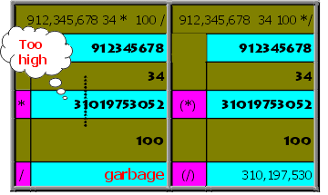
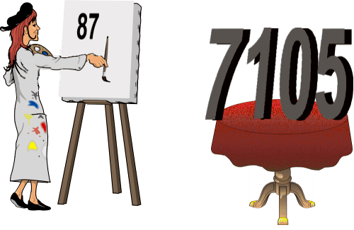

In this chapter we'll introduce a new batch of arithmetic operators. Along the way we'll tackle the problem of handling decimal points using only whole-number arithmetic.
Let's start with the real easy stuff. You should have no trouble figuring out what the words in
the following table do.
| 1+ | ( n -- n+1 ) | Adds one. | 
|
| 1- | ( n -- n-1 ) | Subtracts one. |
|
| 2+ | ( n -- n+2 ) | Adds two. |
|
| 2- | ( n -- n-2 ) | Subtracts two. |
|
| 2* | ( n -- n*2 ) | Multiplies by two (arithmetic left shift). |
|
| 2/ | ( n -- n/2 ) | Divides by two (arithmetic right shift). |
|
The reason they have been defined as words in your Forth system is that they are used very frequently in most applications and even in the Forth system itself.
The only reason to use a word such as 1+, instead of one and +, is tradition. In modern Forths 1+ saves neither space nor compile or execution time.

|
Here's a table of four miscellaneous math operators. Like the quickie operators, these functions
should be obvious from their names.
| ABS | ( n -- |n| ) | Returns the absolute value. |
|
| NEGATE | ( n -- -n ) | Changes the sign. |
|
| MIN | ( n1 n2 -- n-min ) | Returns the minimum. |
|
| MAX | ( n1 n2 -- n-max ) | Returns the maximum. |
|
Here are two simple word problems, using ABS and MIN:
ABS
Write a definition which computes the difference between two numbers, regardless of the order in which the
numbers are entered.
: DIFFERENCE - ABS ;
This gives the same result whether we enter
52 37 DIFFERENCE . 15 ok 37 52 DIFFERENCE . 15 ok
MIN
Write a definition which computes the commission that furniture salespeople will receive if they've
been promised $50 or 1/10 of the sales price, whichever is less, on each sale they make.
: COMMISSION 10 / 50 MIN ;
Three different values would produce these results:
600 COMMISSION . 50 ok 450 COMMISSION . 45 ok 50 COMMISSION . 5 ok
We mentioned before that there were still some stack manipulation operators we hadn't discussed yet. Now it's time.
Up till now we've been talking about "the stack" as if there were only one. But in fact there
are two: the "parameter stack"
and the "return stack." The parameter stack is used more often by Forth programmers, so it's
simply called "the stack" unless there is cause for doubt.
As you've seen, the parameter stack holds parameters (or "arguments") that are being passed from word to word. The return stack, however, holds any number of "pointers" which the Forth system uses to make its merry way through the maze of words that are executing other words. We'll elaborate later on.
You, the user, can employ the return stack as as kind of "extra hand" to hold values temporarily while you perform operations on the parameter stack.
The return stack is a last-in first-out structure, just like the parameter stack, so it can hold many values. But here's the catch: whatever you put on the return stack you must remove again before you get to the end of the definition (the semicolon), because at that point the Forth system will expect to find a pointer there. You cannot use the return stack to pass parameters from one word to another.
The following table lists the words associated with the return stack. Remember, the stack notation
refers to the parameter stack.
| >R | ( n -- ) | Takes a value off the parameter stack and pushes it onto the return stack. |
|
| R> | ( -- n ) | Takes a value off the return stack and pushes it onto the parameter stack. |
|
| I | ( -- n ) | Copies the top of the return stack without affecting it. |
|
| R@ | ( -- n ) | Copies the top of the return stack without affecting it. |
|
| J | ( -- n ) | Copies the third item of the return stack without affecting it. |
|
The words >R and R> transfer a value to and from the return stack, respectively. Say we want the following stack effect:
( 2 3 1 -- 3 2 1 )this is the phrase that will do it:
>R SWAP R>
Each >R and its corresponding R> must be used together in the same definition.
The other three words--I or R@ and J--only copy values from the return stack without removing them. Thus the phrase:
>R SWAP R@would produce the same result as far as it goes, but unless you clean up your trash before the next semicolon you will crash the system.
To see how >R, R>, R@, and I might be used, imagine you are so unlucky as to need to solve the equation:
ax2 + bx + cwith all four values on the stack in the following order:
( a b c x -- )(remember to factor out first).
| Operator | parameter stack | return stack |
|---|---|---|
| a b c x | ||
| >R | a b c | x |
| SWAP ROT | c b a | x |
| R@ | c b a x | x |
| * | c b ax | x |
| + | c ax+b | x |
| R> * | c x(ax+b) | |
| + | x(ax+b)+c |
Go ahead and try it. Load the following definition:
: QUADRATIC ( a b c x -- n ) >R SWAP ROT R@ * + R> * + ;
Now test it:
2 7 9 3 QUADRATIC 48 ok
First, what does floating point mean? Take a pocket calculator, for example. Here's what the display looks like after each step:
| You enter: | Display reads: |
|---|---|
| 1 . 5 0 x | 1.5 |
| 2 . 2 3 | 2.23 |
| = | 3.345 |
The decimal point "floats" across the display as necessary. This is called a "floating point display."
"Floating point representation" is a way to store numbers in computer memory using a form of scientific notation. In scientific notation, twelve million is written:
12 x 106since ten to the sixth power equals one million. In a computer twelve million is stored as two numbers: 12 and 6, where it is understood that 6 is the power of ten to be multiplied by 12, while 3.345 could be stored as 3345 and -3.
The idea of floating-point representation is that the computer can represent an enormous range of numbers, from atomic to astronomic, with two relatively small numbers.
What is fixed-point representation? It is simply the method of storing numbers in memory without storing the positions of each number's decimal point. For example, in working with dollars and cents, all values can be stored in cents. The program, rather than each individual number, can remember the location of the decimal point.
For example, let's compare fixed-point and floating-point representations of dollars-and-cents values.
| Real world value: | Fixed-point representation: | Floating-point representation: |
|---|---|---|
| 1.23 | 123 | 123(-2) |
| 10.98 | 1098 | 1098(-2) |
| 100.00 | 10000 | 1(2) |
| 58.60 | 5860 | 586(-1) |
As you can see , with fixed-point all the values must conform to the same "scale." The decimal points must be properly "aligned" (in this case two places in from the right) even though they are not actually represented. With fixed-point, the computer treats all the numbers as though they were integers. If the program needs to print out an answer, however, it simply inserts the decimal point two places in from the right before it sends the number to the terminal or to the printer.
A Forth programmer is most interested in maximizing the efficiency of the machine. That means he or she wants to make the program run as fast as possible and require as little computer memory as possible. Unfortunately, not all processors or controllers offer hardware floating-point support. Therefore, in some environments, programs that use floating-point features are redirected through an emulation library. Emulation code can be up to three times slower than the equivalent fixed-point calculation. Of course, this difference is only really noticeable in programs which have to do a lot of calculations before sending results to a terminal or taking some action. The catch is that code from an emulation library is also many times larger than its fixed-point counterpart, which is quite uneconomical for small embedded controllers and such.
You should note carefully that when a processor supports hardware floating-point, it is almost always much faster and more compact than the fixed-point equivalent. The speed difference can be between 3 and 15 times.
Everything you can do with floating-point, you can do with fixed-point too, as we'll show in the following. But there is one thing you should minimize as much as possible, and that is switching back and forth between fixed and floating-point formats. Format conversion and additional scaling steps cost as much or even more time than doing the calculations themselves.
Forth helps programmers use fixed-point by supplying them with a unique set of high-level commands called "scaling operators." We'll introduce the first of these commands in the next section. (The final example in Chap. 12 illustrates the use of scaling techniques.)
Here's a math operator that is as useful as it is unusual: */.
| */ | ( n1 n2 n3 -- n-result ) | Multiplies, then divides (n1*n2/n3). Uses a double-length intermediate result. |
|
As its name implies, */ performs multiplication, then division. For example, let's say that the stack contains these three numbers:
( 225 32 100 -- )*/ will first multiply 225 by 32, then divide the result by 100.
This operator is particularly useful as an integer-arithmetic solution to problems such as percentage calculations.
For example, you could define the word % like this:
: % 100 */ ;so that by entering the number 225 and then the phrase:
32 %you'd end up with 32% of 225 (that is, 72) on the stack.
The method of first multiplying two integers, then dividing by 100 is identical to the approach most people take in solving such problems on paper:
225 0.32 x 4.50 67.5 72.00
*/ is not * and a / thrown together, though. It uses a "double-length intermediate result." What does that mean, you ask?
|  |
Say you want to compute 34% of 912,345,678. Remember that single-precision operators, like * and /, only work with arguments and results within the range of a single-length number. If you were to enter the phrase:
912345678 34 * 100 /you'd get an incorrect result, because the "intermediate result" (in this case, the result of the multiplication), exceeds 2147483647, as shown in the left column in this pictorial simulation.
But */ uses a double-length intermediate result, so that its range will be large enough to hold the result of any two single-length numbers multiplied together. The phrase:
912345678 34 100 */returns the correct answer because the end result falls within the range of single-length numbers.
The previous example brings up another question: how to round off.
Let's assume that this is the problem:
If 32% of the students eating at the school cafetaria usually buy bananas, how many bananas should be on hand for a crowd of 225? Naturally, we are only interested in whole bananas, so we'd like to round off any decimal remainder.
As our definition now stands, any value to the right of the decimal is simply dropped. In other words, the result is "truncated."
| 32% of: | Result: |
|---|---|
| 225 = 72.00 | 72 -- exactly correct |
| 226 = 72.32 | 72 -- correct, rounded down (truncated) |
| 227 = 72.64 | 72 -- truncated, not rounded |
There is a way, however, with any decimal value of .5 or higher, to round upwards to the next whole banana. We could define the word R%, for "rounded-percent," like this:
: R% 10 */ 5 + 10 / ;so that the phrase:
227 32 R% .will give you 73, which is correctly rounded up.
Notice that we first divide by 10 rather than by 100. This gives us an extra decimal place to work with, to which we can add five:
| Operation | Stack Contents |
|---|---|
| 227 32 10 | |
| */ | 726 |
| 5 + | 731 |
| 10 / | 73 |
The final division by ten sets the value to its rightful decimal position. Try it and see.
A disadvantage to this method of rounding is that you lose one decimal place of range in the final result; that is, it can only go as high as 214,748,364 rather than 2,147,483,647. But if that's a problem, you can always use double-length numbers, which we'll introduce later, and still be able to round.
Let's back up for a minute. Take the simple problem of computing two-thirds of 171. Basically, there are two ways to go about it.
Notice that the second way is simpler and more accurate.
Most computer languages support the first way. "You can't have a fraction like two-thirds hanging around inside a computer," it is believed, "you must express it as .6666666, etc."
Forth supports the second way. */ lets you have a fraction like two-thirds, as in:
171 2 3 */
Now that we have a little perspective, let's take a slightly more complicated example:
We want to distribute $150 in proportion to two values:
7,105 ? 5,145 ? 12,250 150
|  |
(7,105 / 12,250) x 150and
(5,145 / 12,250) x 150but for greater accuracy we should say:
(7,105 x 150) / 12,250and
(5,145 x 150) / 12,250which in Forth is written:
7105 150 12250 */ . 87 okand
5145 150 12250 */ . 63 ok
It can be said that the values 87 and 63 are "scaled" to 7105 and 5145. Calculating percentages, as we did earlier, is also a form of scaling. For this reason, */ is called a "scaling operator."
Another scaling operator in Forth is */MOD:
| */MOD | ( n1 n2 n3 -- n-rem n-result ) | Multiplies, then divides (n1*n2/n3). Returns the remainder and the quotient. Uses a double-length intermediate result. |
|
We'll let you dream up a good example for */MOD yourself.
So far we've only used scaling operations to work on rational
numbers. They can also be used
on rational approximations of irrational constants, such as p or the +2. For example,
the real value of p is:
3.14159265358979, etc.but to stay within the bounds of single-length arithmetic, we could write the phrase:
31416 10000 */and get a pretty good approximation.
Now we can write a definition to compute the area of a circle, given its radius. We'll translate the formula:
πr2into Forth. The value of the radius will be on the stack, so we DUP it and multiply it by itself, then star-slash the result:
: PI DUP * 31416 10000 */ ;
Try it with a circle whose radius is 10 inches:
10 PI . 314 ok
But for even more accuracy, we might wonder if there is a pair of integers beside 3146 and 10000 that is a closer approximation to π. Surprisingly, there is. The fraction:
355 113 */is accurate to more than six places beyond the decimal, as opposed to less than four places with 31416.
Our new and improved definition, then, is:
: PI DUP * 355 113 */ ;
It turns out that you can approximate nearly any constant by many different pairs of integers, all numbers less than 32768, with an error less than 10-8.
| Number | Approximation | Error |
|---|---|---|
| π = 3.141 ... | 355 / 113 | 8.5 x 10-8 |
| π = 3.141 ... | 1068966896 / 340262731 | 9.7 x 10-19 |
| √2 = 1.414 ... | 19601 / 13860 | 1.3 x 10-9 |
| √3 = 1.732 ... | 18817 / 10864 | 1.4 x 10-9 |
| e = 2.718 ... | 25946 / 9545 | 2.0 x 10-9 |
| √10 = 3.162 ... | 22936 / 7253 | 5.7 x 10-9 |
| 12√2 = 1.059 ... | 26797 / 25293 | 1.7 x 10-9 |
| log(2) / 1.6384 = 0.183 ... | 2040 / 11103 | 1.3 x 10-8 |
| ln(2) / 16.384 = 0.042 ... | 485 / 11464 | 9.0 x 10-8 |
Here's a list of the Forth words we've covered in this chapter:
| 1+ | ( n -- n+1 ) | Adds one. |
| 1- | ( n -- n-1 ) | Subtracts one. |
| 2+ | ( n -- n+2 ) | Adds two. |
| 2- | ( n -- n-2 ) | Subtracts two. |
| 2* | ( n -- n*2 ) | Multiplies by two (arithmetic left shift). |
| 2/ | ( n -- n/2 ) | Divides by two (arithmetic right shift). |
| ABS | ( n -- |n| ) | Returns the absolute value. |
| NEGATE | ( n -- -n ) | Changes the sign. |
| MIN | ( n1 n2 -- n-min ) | Returns the minimum. |
| MAX | ( n1 n2 -- n-max ) | Returns the maximum. |
| >R | ( n -- ) | Takes a value off the parameter stack and pushes it onto the return stack. |
| R> | ( -- n ) | Takes a value off the return stack and pushes it onto the parameter stack. |
| I | ( -- n ) | Copies the top of the return stack without affecting it. |
| R@ | ( -- n ) | Copies the top of the return stack without affecting it. |
| J | ( -- n ) | Copies the third item of the return stack without affecting it. |
| */ | ( n1 n2 n3 -- n-result ) | Multiplies, then divides (n1*n2/n3). Uses a double-length intermediate result. |
| */MOD | ( n1 n2 n3 -- n-rem n-result ) | Multiplies, then divides (n1*n2/n3). Returns the remainder and the quotient. Uses a double-length intermediate result. |
| | |
|---|---|
| Double-length intermediate result | a double-length value which is created temporarily by a two-part operator, such as */, so that the "intermediate result" (the result of the first operation) is allowed to exceed the range of a single-length number, even when the initial arguments and the final result are not. |
| Fixed-point arithmetic | arithmetic which deals with numbers which do not themselves indicate the location of decimal points. Instead, for any group of numbers, the program assumes the location of the decimal point or keeps the decimal location for all such numbers as a separate number. |
| Floating-point arithmetic | arithmetic which deals with numbers which themselves indicate the location of their decimal points. The program must be able to interpret the true value of each individual number before any arithmetic can be performed. |
| Parameter stack | in Forth, the region of memory which serves as common ground between various operations to pass arguments (numbers, flags, or whatever) from one operation to another. |
| Return stack | in Forth, a region of memory distinct from the parameter stack which the Forth system uses to hold "return addresses" (to be discussed in Chap. 9), among other things. The user may keep values on the return stack temporarily, under certain conditions. |
| Scaling | the process of multiplying (or dividing) a number by a ratio. Also refers to the process of multiplying (or dividing) a number by a power of ten so that all values in a set of data may be represented as integers with the decimal points assumed to be in the same place for all values. |
| | |

-a b cgiven ( a b c -- ) [answer]
( 6 70 123 45 -- )write an expression that prints the largest value. [answer]
oC = (oF - 32) / 1.8(For now, express all arguments and results in whole degrees.)
oF = (oC x 1.8) + 32
oK = oC + 273
F>C F>K C>F C>K K>F K>CTest them with the above values. [answer]